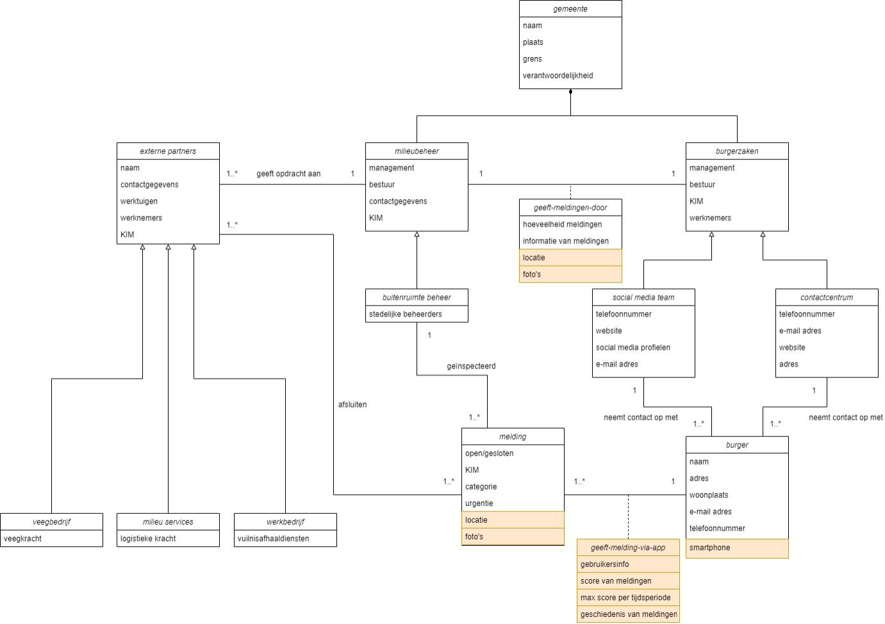

This section shows a selection of projects I participated in, which most influenced my professional development.
AI-assisted requirements definition in a waterfall project management approach
August 2023
Using OpenAI’s API
Problem:Transforming 1400 project requirements into acceptance criteria for a train station renovation project in the Netherlands was a time-consuming process. Manually completing this task would take a minimum of 3-4 weeks, posing a significant challenge to meeting project deadlines.
Analysis:- As a Systems Engineer, I faced the challenge of efficiently defining acceptance criteria for numerous project requirements, without compromising the quality and accuracy of the acceptance criteria.
- The criteria-creation process appeared to have a repetitive pattern, where these were very implicitly stated in each project requirement.
Conclusions:- I discovered a pattern in the criteria-creation process, which was mostly a language-intensive process.
- The new introduction of large language models offered an opportunity to automate this process, given the apparent pattern and repetitiveness
Solution:
- Integration of ChatGPT API with Microsoft Excel significantly improved productivity by automating the creation of acceptance criteria.
- This success demonstrates the potential of AI-powered tools to streamline complex processes and free up time for other project activities.
- Share the success story and lessons learned with colleagues to encourage adoption of similar AI-driven solutions in future projects.
Hydrogen-distribution network optimalization in the Rotterdam harbor and its surroundings
March-April 2022
Using Python’s network analysis modules
Problem: The Netherlands is considering increasing hydrogen production in the coming decades. Existing gas pipelines in the Rotterdam harbor could be repurposed for distributing hydrogen throughout the area, including to agricultural producers and homes in Rotterdam.
Analysis:- Various approaches, such as Dijkstra's algorithm, were used to identify profitable solutions.
- Different criteria were considered, including demand and supply optimizations, as well as the costs associated with renovating the pipelines.
- Attention was also given to solutions with the least number of nodes, shortest total length, and shortest total length of the entire network.
Conclusions:- Repurposing existing gas pipelines for hydrogen distribution offers potential benefits in terms of infrastructure utilization and cost savings.
- Optimization efforts must consider both demand and supply factors as well as the costs of renovating the pipelines.
- Different algorithms and criteria can be employed to identify the most suitable solutions based on various factors, such as network efficiency and cost-effectiveness.
Solution:
- Evaluate and prioritize pipeline transformation options based on demand and supply considerations, as well as the costs associated with pipeline renovation.
- Consider solutions that minimize the number of nodes, shorten the total length of pipelines, and optimize the efficiency of the entire network.
Optimizing a COVID-19 vaccine station
March-April 2021
Using Simio discrete simulation modelling solutions
Problem: There was a need to identify bottlenecks in the vaccination process to optimize efficiency and immunize the Dutch population as soon as possible.
Analysis:- The university was tasked with creating a discrete-event model of a COVID-19 vaccination site.
- Testing options in the modeling software were utilized to randomize variables and identify bottlenecks.
Conclusions:- The biggest bottlenecks were identified in the reception area.
- Implementing a ticketing system rather than e.g. multiple waiting lines, following the FIFO principle, was found to minimize processing times.
- After vaccination, only individuals with potential sensitivity to the vaccine required a 15-minute waiting period.
Solution:
- Implement a ticketing system in the reception area of vaccination sites to assign users to the nearest available desk based on the FIFO principle.
- Reserve 15-minute waiting times post-vaccination for individuals with potential sensitivity to the vaccine, such as seniors and patients with other health issues.
Reporting and resolving waste issues in The Hague
May-June 2020
Restructuring of the MOR (Melding openbare ruimte) chain to improve the efficiency of the waste reporting process
Problem: reported full waste containers and public cleanliness issues often untreated
Analysis:- Problem owner engaged in problem analysis
- Information-management process modelled through UML and IDEF0 diagrams
Conclusions:- Limited reporting capabilities - telephone only
- Incorrect information in reports due to miscommunication reporter/telephone operator
- Limited information from operators through to waste management companies
Solution:
- Improve information gathering through web and mobile platform with expanded variables (photos, geo-location and text description)
- Introduce a single ticketing system
- Give access to ticketing platform for waste management companies